Computer Programming & Analysis · George Brown Polytechnic · Toronto, Canada
Building across the full stack — from Python data scripts and Java microservices to Android apps in Kotlin and interactive web experiences in JavaScript.
About Me
| Name | Cherish Nwansi |
| Program | Computer Programming & Analysis |
| College | George Brown Polytechnic, Toronto, ON |
| GPA | 3.8 / 4.0 |
| Phone | +1 (437) 870-6045 |
| cherry.nwansii@gmail.com | |
| linkedin.com/in/cherish-nwansi | |
| GitHub | github.com/Cherishnwa |
| Location | 77 Mutual St, Toronto, ON M5B 0B9 |
| Languages | English (Fluent) · French (Fluent) |
Hi, I'm Cherish Nwansi — a Computer Programming student at George Brown College in Toronto, and a builder at heart. I'm drawn to the intersection of creativity and logic: the space where a well-crafted line of code can solve a real problem, or a thoughtful UI can make someone's day just a little easier.
My journey into tech started with curiosity and has grown into a genuine passion for building across the entire stack — from wrangling data with Python and Jupyter notebooks, to designing RESTful APIs in JavaScript, architecting Java microservices, and shipping Android apps in Kotlin. I love learning by doing, which is why I maintain 15 public repositories on GitHub and contribute to open source whenever I can.
Outside of code, I bring the same energy I put into my projects into everything I do — intentional, creative, and always looking for a better way.
I believe the best technology disappears into the background — it just works, and it works beautifully. My goal is to build software that doesn't just function, but genuinely serves the people using it.
I approach every project with three questions: Who is this for? What problem does it actually solve? And how can I build it in a way that's clean enough to be proud of? I'm driven by a belief that technical excellence and human-centred design are not competing priorities — they're the same priority, seen from different angles.
As a developer, I'm committed to continuous growth, to writing code that others can read and build on, and to showing up as a collaborative, curious, and dependable team member — whether that's in a classroom, a pull request, or a production environment.
Specialities
Responsive, interactive apps from front to back — REST APIs, dynamic UIs, Bootstrap and clean architecture.
Scripting, data analysis, and Jupyter notebooks — transforming raw data into clear, actionable insights.
Native Android apps in Kotlin — clean architecture, Material Design and collaborative team development.
Java microservices, CI/CD pipelines, Docker containerisation and professional Git workflows.
Credentials
George Brown College, Toronto, Ontario
Python, Full Stack JavaScript, DevOps, Android/Kotlin, Java Microservices, Portfolio Development
🦈 Pull Shark — opened and merged multiple pull requests
⚡ YOLO — merged a PR without a code review
Add your previous school, diploma, or high school here.
github.com/Cherishnwa — 15 public repos across Python, JavaScript, Java, Kotlin and DevOps. Contributed to the first-contributions project.
George Brown College — designed and built this portfolio from scratch using HTML, CSS, JavaScript, Bootstrap and the FolioOne template with real GitHub data.
Built backend systems using Python, Java, C#, SQL, and Node.js. Developed mobile interfaces with React Native. Analyzed logs, debugged full-stack issues, and led project teams to ensure high-quality results.
Hardware diagnostics, software debugging, app troubleshooting and network configuration for peers. Guided users through device setup, connectivity issues, and app behavior using clear, supportive communication.
Delivered fast, friendly service to 80+ customers per shift. De-escalated concerns with calm, solution-focused communication. Maintained professionalism during peak hours in a high-energy environment.
Portfolio
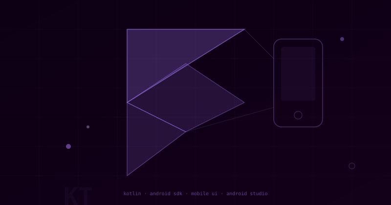
01 ⭐ CapstoneCapstone Project — George Brown College
Collaborative Android app built in Kotlin — mobile UI/UX design, Android architecture components, and real-world team development on a shared codebase.
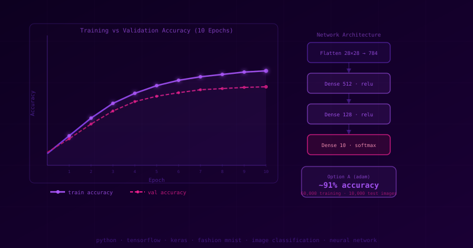
02 Python · TensorFlowImage classification Neural Network trained on 60,000 Fashion MNIST images across 10 clothing categories — T-shirts, trousers, sneakers, bags and more. Compared two model configurations (Adam vs RMSprop) achieving ~91% test accuracy over 10 epochs.
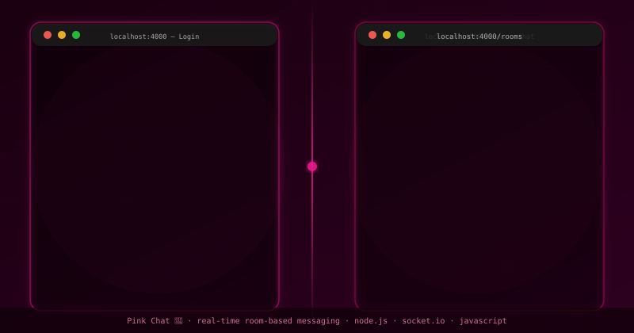
03 Node.js · Socket.IO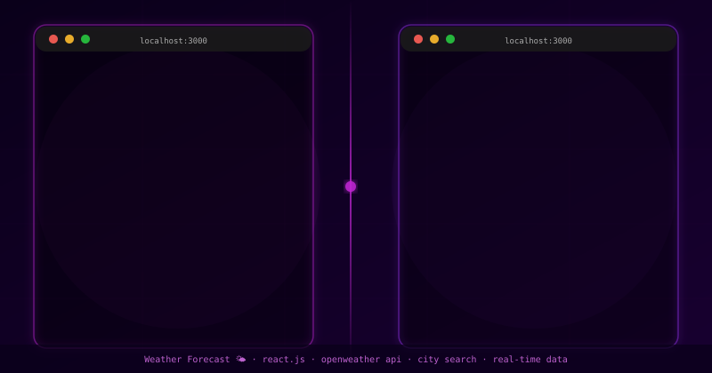
04 React · API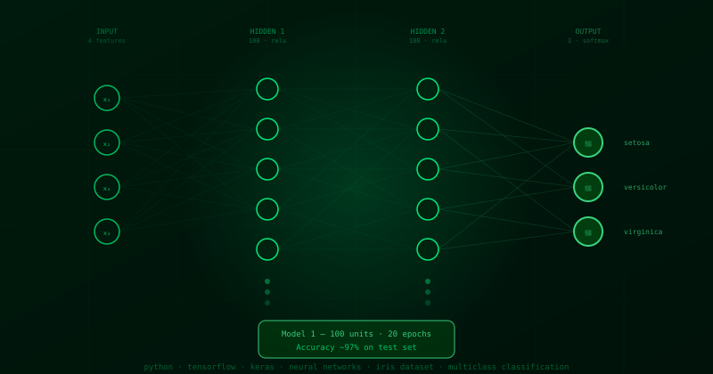
05 Python · TensorFlowMulticlass classification of the Iris dataset using a Sequential Neural Network built with TensorFlow/Keras. Trained and evaluated two models — a 100-unit deep network achieving ~97% accuracy and a lightweight 10-unit model — with full hyperparameter experimentation across optimiser, layers, units, epochs, and batch size.
Featured Project
A full-stack social reading platform — React Native · Firebase · OpenLibrary API
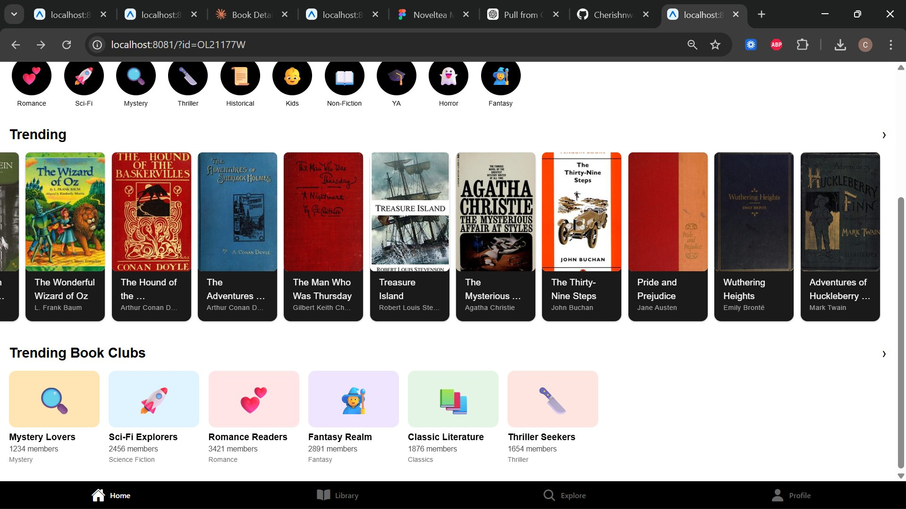
⭐ Capstone ProjectGeorge Brown Polytechnic · Computer Programming & Analysis · Capstone
NovelTea is an innovative mobile application designed to transform the reading experience into a social and community-driven journey. As a specialised networking platform, it allows bibliophiles to create and manage digital book clubs, engage in real-time discussions, track daily reading streaks, and receive data-driven book recommendations — all in one cross-platform app.
NovelTea is an innovative mobile application designed to transform the reading experience into a social and community-driven journey. As a specialised networking platform, it allows bibliophiles to create and manage digital book clubs where they can engage in real-time discussions. The app incorporates a unique "reading streak" feature to gamify literacy and motivate users to maintain daily reading habits. Beyond social connectivity, NovelTea provides data-driven book recommendations tailored to individual user preferences. The project integrates a high-performance React Native frontend with a Firebase backend, bridging the gap between solitary reading and global social interaction.
The vision for NovelTea is to create the ultimate digital hub for book lovers, fostering a global community through shared literary interests. By centralising social networking, habit tracking, and personalised discovery into one mobile interface, the project aims to solve the isolation often felt in traditional reading. The core goal is to leverage gamification — such as reading streaks — to increase long-term user retention and literacy rates. The project envisions a seamless cross-platform experience that remains fast and responsive on both iOS and Android, redefining how people discover new titles and interact with fellow readers in the digital age.
The project requirements focus on delivering a high-performance social ecosystem with secure user authentication managed via Firebase Auth. Key business functionalities include the ability for users to join or host public and private book clubs to facilitate real-time discussions. The system must accurately track daily reading progress to maintain user streaks, requiring robust state management. Additionally, the app must integrate discovery logic to offer curated recommendations based on community trends and user data. Technical requirements specify a NoSQL (Firestore) database to ensure real-time updates and low-latency interactions across the network.
The project plan outlines a structured development lifecycle spanning multiple sprints to move NovelTea from concept to final delivery. Key milestones include the completion of the baseline project plan and the iterative refinement of core features during Sprint 5 and 6. The schedule prioritises the integration of the React Native UI with Firebase services including Firestore and Authentication. Regular team meetings are scheduled to address technical hurdles, with risk management allocated for testing the efficiency of real-time data syncs. This organised roadmap ensures the project remains on track for a successful final implementation.
The design of NovelTea utilises a Declarative UI approach within React Native to provide a smooth and responsive user experience. Analysis indicated that a NoSQL architecture was necessary to handle the dynamic nature of book club discussions and real-time social updates. The system's logic is designed around React Hooks and the Context API for efficient state management of user reading streaks. A modern aesthetic is maintained using NativeBase/Styled Components, ensuring high-quality visuals on various screen sizes. Extensive analysis was conducted to ensure the recommendation engine effectively processes user data to provide meaningful literary suggestions.
The project's visual design started with comprehensive wireframes that mapped out the user journey from login to book club participation. These mockups focused on a clean, intuitive interface that highlights community interaction and daily reading goals. The design specifically prioritises a "discovery" feed where users can easily view recommendations and trending books. Visual indicators for reading streaks were designed to be prominent and motivating, encouraging consistent daily engagement. High-fidelity mockups were created to ensure the NovelTea brand felt welcoming and sophisticated for a literary audience, serving as the blueprint for the React Native development phase.
The status reports indicate consistent progress throughout the term, with the project currently meeting its major technical milestones. Recent reports highlight the successful implementation of core social features and the stabilisation of the Firebase backend. Challenges addressed include optimising the real-time performance of the book club discussion modules. The team has completed approximately 75% of planned deliverables, with upcoming tasks focused on final UI polishing and bug fixes. Status updates also track the attendance and contributions of team members during Sprint meetings to ensure high accountability. The project is currently in a strong position for a successful terminal launch.
The implementation phase of NovelTea involves a full-stack deployment using React Native for the mobile frontend and Google Firebase for backend services. Developers utilised Firestore to manage real-time database operations, allowing book club members to see updates and messages instantly. Security is implemented through Firebase Authentication, ensuring all user data and club privacy settings are strictly maintained. The reading streak logic is built into the application's core state management, providing persistent tracking across sessions. Final integration steps involve optimising the app for high-fidelity performance on both iOS and Android to ensure platform-agnostic accessibility.
Create or join public and private book clubs. Browse by genre — Romance, Sci-Fi, Mystery, Thriller, Fantasy, Horror and more.
Gamified daily reading habit tracker that motivates users to maintain streaks and build a consistent reading routine.
Search by author, genre, popularity, release date, and featured lists. Powered by the OpenLibrary API with real cover images.
Firebase Firestore powers instant real-time updates across book club discussions, member activity, and reading progress.
Firebase Auth manages secure user sign-in, profile management, and private club access controls.
Built with React Native for seamless performance on both iOS and Android from a single codebase.
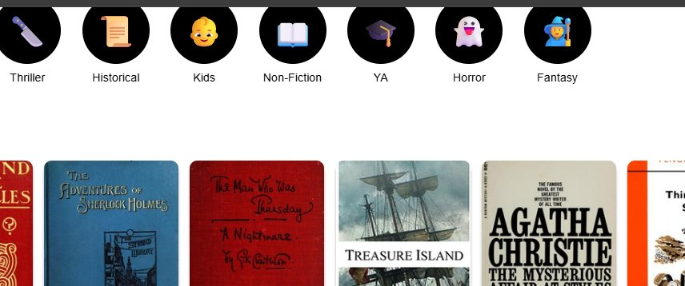
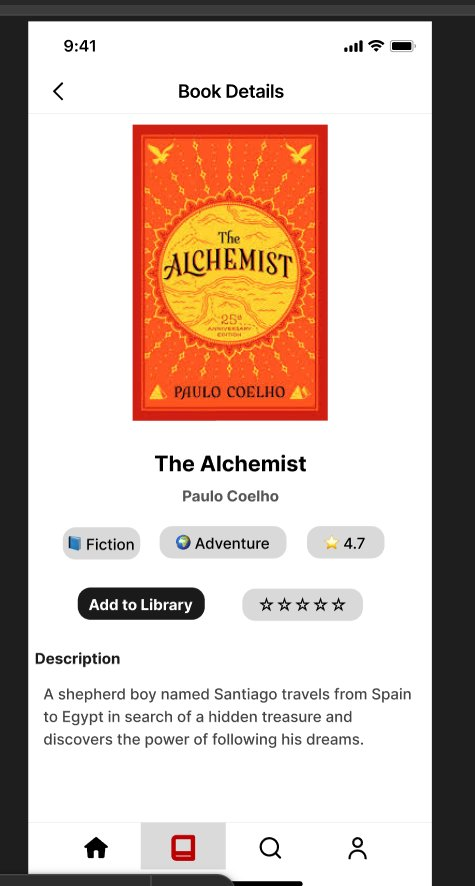
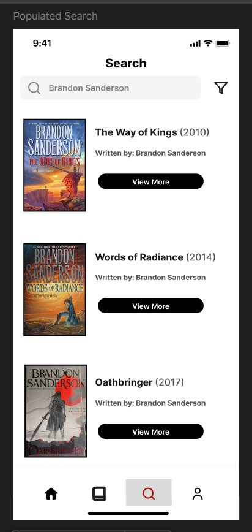
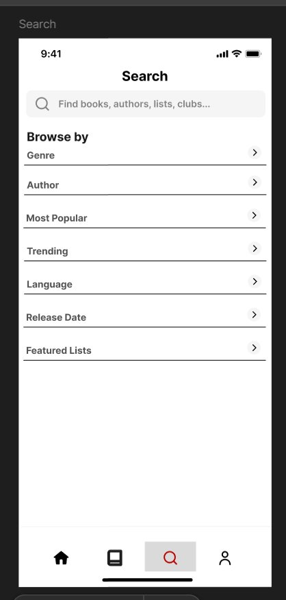
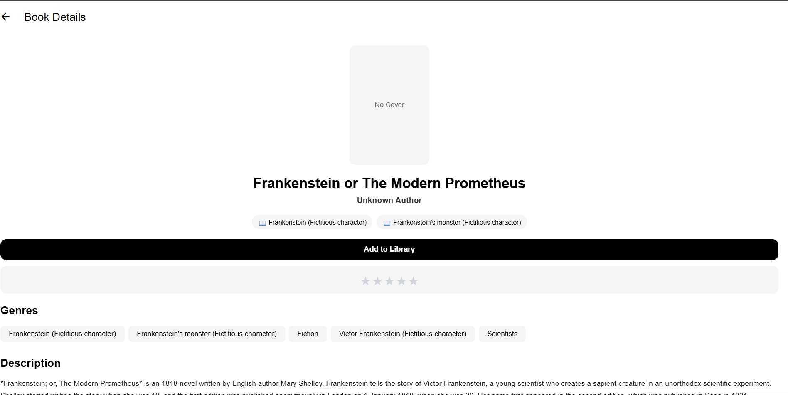
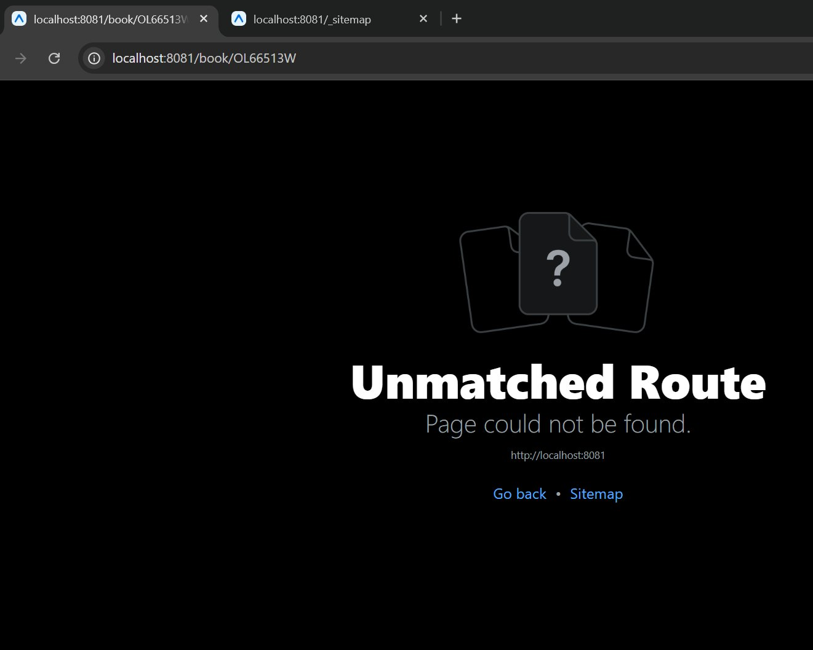
Education & Credentials
George Brown Polytechnic · Toronto, Ontario
2023 – Present · GPA: 3.8 / 4.0
Full-stack development across Python, JavaScript, Java, C#, Kotlin, React Native, SQL, and Node.js. Lab tests, group projects, DevOps, and capstone development (NovelTea). Teacher's Assistant 2024–present.
Methodist Girls High School
Prior to 2023
Completed secondary education at Methodist Girls High School, building the academic foundation that led to further studies in Computer Programming & Analysis at George Brown Polytechnic, Toronto.
GitHub · @Cherishnwa
2024–2025
🦈 Pull Shark — awarded for opening and merging multiple pull requests across projects.
⚡ YOLO — awarded for merging a pull request without a code review.
George Brown Polytechnic · GPA 3.8 / 4.0
2023 – Present
Official transcript available upon request. Maintaining a 3.8 GPA across Computer Programming & Analysis coursework.
Personal Data
Sample cover letter template for a Junior Developer / Technical Support role.
Re: Application for Junior Software Developer / Technical Support Position
Dear [Hiring Manager's Name],
I am writing to express my strong interest in the Junior Software Developer position at [Company Name]. As a Computer Programming & Analysis student at George Brown Polytechnic maintaining a 3.8 GPA, with hands-on experience across the full development stack — Python, Java, C#, React Native, Node.js, and SQL — I am eager to bring both my technical skills and genuine enthusiasm for problem-solving to your team.
Through my role as a Teacher's Assistant at George Brown, I have built backend systems, developed mobile interfaces with React Native, debugged full-stack issues, and led project teams. My real-world projects include Pink Chat (a real-time Node.js/Socket.IO messaging app), a Weather Forecast App built with React and the OpenWeather API, and multiple neural network classifiers using TensorFlow/Keras. I am also an active open source contributor on GitHub and bring strong soft skills from my experience as a Receptionist at AfroBeat Kitchen Restaurant, where I managed 80+ customer interactions per shift with calm, solution-focused communication.
What draws me to [Company Name] is [reason specific to the company]. I am bilingual in English and French, a natural team leader, and deeply committed to inclusive, clear communication — qualities I bring to both technical and customer-facing environments.
I welcome the opportunity to discuss how my background aligns with your team. I can be reached at cherry.nwansii@gmail.com or +1 (437) 870-6045.
Thank you for your time and consideration.
Sincerely,
Cherish Nwansi
Professional Experience
George Brown Polytechnic · Toronto, ON · 2024 – Present
Built backend systems using Python, Java, C#, SQL, and Node.js. Developed mobile interfaces with React Native. Analyzed logs, debugged full-stack issues, and led project teams to ensure clarity, progress, and high-quality academic outcomes.
Toronto, ON · 2024 – Present
Delivered fast, friendly service to 80+ customers per shift. De-escalated concerns with calm, solution-focused communication. Maintained professionalism and efficiency during peak hours while contributing to smooth team coordination.
George Brown Polytechnic · 2023 – Present
Hardware diagnostics, software debugging, app troubleshooting and network configuration for peers. Guided users through device setup, OS updates, and app behavior with clear, supportive communication.
Active member of the George Brown College Volunteer Squad — contributing to campus events, community outreach, and student support initiatives. Representing the college and giving back to the wider student community.
Contributed to the first-contributions open source project — a community guide that helps beginners make their first GitHub pull request. Earned the Pull Shark achievement for collaborative contributions.
GitHub — opened and merged multiple pull requests across projects.
GitHub — merged a pull request without a code review.
George Brown Polytechnic — Computer Programming & Analysis.
Fluent — professional and academic proficiency.
Fluent — professional and academic proficiency.
Get in Touch
Open to internships, co-ops, and collaborative projects. Available in English and French.